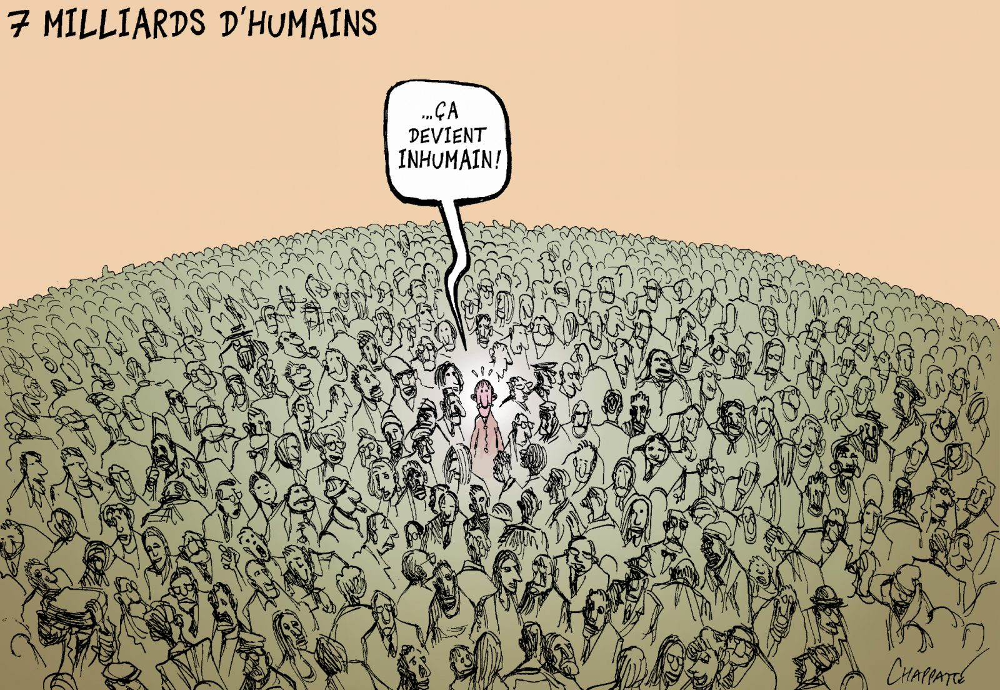

Un AVENIR INCERTAIN FACE A L'ACCROISSEMENT DE LA POPULATION MONDIALE
Un AVENIR INCERTAIN FACE A L'ACCROISSEMENT DE LA POPULATION MONDIALE
Aujourd'hui, la population mondiale ne cesse de s'accroître, on parle donc d'une croissance démographique. Cette explosion démographique est causée par une espérance de vie qui recule et un nombre de naissances qui augmente fortement. Aujourd’hui la population s’élève à 7.7 milliards d’êtres humains, mais qu’en est-il de demain ? L'organisation des Nations Unies prévoie 9,7 milliards d'habitants en 2050. Face à ce chiffre quelles difficultés va rencontrer notre société face à la croissance démographique ?
MENU
Quelles solutions doit-on mettre en place dès aujourd’hui ?
Les problèmes liés à l'explosion démographique
La croissance démographique à l'échelle planétaire
BIBLIOGRAPHIELa croissance démographique à l'échelle planétaire
Comme nous venons de le voir, nous sommes face aujourd’hui à une population mondiale qui ne cesse de croître c’est ce que l’on appelle une croissance démographique. Cette croissance peut s’exprimer grâce au taux d’évolution. Cette croissance explose dans le monde, mais plus précisément sur le continent Africain notamment au Nigeria. Cependant, certains pays ne connaissent pas une croissance démographique il y a donc des pays qui sont inégaux en terme de taux d’évolution comme par exemple le Japon.
Les prévisions de cette croissance démographique
Selon les projections de l’ONU, “la population mondiale devrait augmenter de 2 milliards de personnes au cours des trente prochaines années, passant de 7,7 milliards actuellement à 8,5 milliards en 2030, 9,7 milliards en 2050. Elle pourrait atteindre un nombre proche de 11,2 milliards d'individus vers l'an 2100”. De plus, selon l’HYDE la région du monde qui connaîtra la plus forte croissance démographique c’est l’Asie. Elle connaitra 4,74 milliards d’habitants en 2100 suivis de l’Afrique qui connaitra 4,26 milliards d’habitants. Cependant, l’Asie connaitra une baisse en terme de son nombre de population à partir de 2050. A l’inverse, l’Afrique connaîtra une hausse de population de 2050 à 2100. Passant de 2,49 milliards en 2050 à 4,26 milliards en 2100. Tout d’abord, cette croissance va dépendre du taux d’évolution surtout au niveau du taux de fécondité mondial. Aujourd’hui, il s’élève à 2,5 enfants par femme mais d’ici 2050, il est estimé à 2,2 enfants par femme. Il pourrait donc baisser en perdant en moyenne 0,3 enfant par femme. En revanche, pour l’espérance de vie, il est prévu qu’elle progresse passant de 72,6 à 77,1 en 2050. On vivra donc plus longtemps. Il y a donc une multitude de facteurs qui expliquent cette croissance démographique prévue dans les années 2050.
Une croissance démographique inégale
Comme nous venons de le voir dans la première partie, l’Afrique est le continent qui connaîtra la plus forte croissance jusqu’en 2100. D’ici 2050, plus de la moitié de la population mondiale sera issue de l’Afrique. C’est le continent qui connaîtra la plus forte évolution démographique. Par exemple, la population subsaharienne est estimée à 2,4 milliards d’habitants, dont 62% de sa population sont des jeunes de moins de 25 ans. En Afrique, on parlera d’une explosion démographique principalement liée au taux de fécondité qui s’élève aujourd’hui, de 7 à 8 enfants par femme. Cela s’explique par le fait, qu’en Afrique, les moyens de contraception posent problème principalement pour des raisons religieuses. Par exemple, le Tchad est le pays africain qui détient un des taux de recours aux contraceptifs les plus bas, soit 5% de la population. Selon l’United Nation, c’est à partir de 1950 que le continent africain a connu une forte croissance, soit un taux de 1,97%. Cette croissance démographique n’a cessé d’augmenter jusqu’aux années 80, jusqu’à afficher un taux de croissance démographique à environ 3%. Puis, même si des pays africains affichent des taux supérieurs à 5% tels que l’Angola, la République démocratique du Congo et aussi le Niger, on observe, dans son ensemble une baisse significative du taux de croissance démographique de l’Afrique, soit en 2020 il est de 2,44%. Pour les prochaines années à venir, ce taux est prévu de ralentir encore plus s’affichant à 1,68% en 2050 et de 0,99% en 2100. L’Afrique est donc le continent qui connaîtra une forte croissance mais cette croissance sera nettement moins forte que les années précédentes.
A l’inverse de l’Afrique, plusieurs pays en 2050 devraient voir leur démographie baisser d’environ 15% dont la Bosnie-Herzégovine, la Bulgarie, la Croatie, la Hongrie, le Japon, la Lettonie, la Lituanie, la République de Moldavie, la Roumanie, la Serbie et l’Ukraine. Cela s’explique par le fait qu’aujourd’hui, leurs taux de fécondité sont inférieurs au taux nécessaire pour parvenir à un seuil de renouvellement de la population sur le long terme, soit 2,1 enfants par femme. Le Japon est un des pays qui connaît une baisse démographique. Selon l’International institue for applied systemes analysis (IASA), c’est depuis 2010 que le Japon connaît une baisse démographique. En 2010, il comportait 126,54 millions d’habitants et aujourd’hui il en compte 124, 53 millions. Pour 2050, il est prévu que le pays comporte 107,48 millions d’habitants et pour 2100, 74,74 millions. Par rapport à aujourd’hui, le pays devrait perdre 49,79 habitants d’ici 2100. Cela s’explique par le fait que le taux de natalité s’élève à 1,44 enfant par femme ce résultat ne permet donc pas de renouveler la population du pays car ce taux devrait être à 2,1 enfants par femme. De plus, la part des personnes ayant plus de 65 ans représentent environ 30% sur l’ensemble de la population du pays. Le Japon connaît donc un déclin démographique. A ce rythme, dans 1000 ans, le pays sera vide.
La croissance démographique connaît donc une tendance générale à la hausse notamment pour les pays africains. Cette croissance s’explique notamment par un taux d'évolution qui ne cesse de croître chez certains pays notamment une explosion du taux de fécondité. A l’inverse, d’autres pays sont en difficultés notamment l’Ukraine et le Japon. Ces pays connaissent un déclin démographique notamment à cause d’un taux de fécondité beaucoup trop bas ce qui ne permet pas de renouveler leur population. Cependant, la tendance générale va à la hausse en termes de démographie mondiale mais cela peut causer certains problèmes dans le monde.
BIBLIOGRAPHIELes problèmes liés à l'explosion démographique
Aujourd’hui, nous sommes face à une nouvelle ère géologique nommée l’Anthropocène. Ce terme désigne l’époque de l’histoire de la Terre qui a débuté lorsque les activités humaines ont eu un impact global significatif sur l’écosystème terrestre. L’anthropocène est causé principalement par la croissance démographique de la planète car l’empreinte de l’Homme est de plus en plus importante. Face à cette explosion démographique, nous faisons face à un réchauffement climatique qui est une augmentation de la température moyenne à la surface de la Terre. Ce réchauffement climatique est la source de nombreux problèmes comme par exemple des problèmes environnementaux, la rareté de l’eau potable et une insécurité alimentaire. Autres conséquences de cette croissance démographique, c’est une explosion de la consommation, des déchets et une augmentation de l’étalement urbain.
L'impact sur l'environnement
A l’échelle planétaire, on observe de nombreux problèmes environnementaux. Ce sont des revers ou des perturbations qui surviennent dans le milieu naturel. Tout d’abord, il y a la pollution de l’air. Cette pollution ne cesse d’augmenter. Selon IHME, c’est la Chine qui est le pays qui connaît le plus de décès liés à la pollution de l’air extérieur. En 1990, il y a eu 618,257 morts et en 2017, il y a eu 1,03 million de morts liés à la pollution de l’air extérieur. Puis, il y a l’Inde avec 386,427 morts en 1990 et 818,803 morts liés à la pollution de l’air extérieur en 2017. On remarque donc une différence importante entre ces deux années. En 1990, il y a moins de décès qu’en 2017. L’air extérieur est donc beaucoup plus pollué aujourd’hui qu’en 1990. Autres observations, ce sont les pays les plus peuplés tels que l’Inde et la Chine qui connaissent le plus de décès causés par la pollution de l’air extérieur. Il y a donc une relation entre la pollution de l’air et le nombre d'habitants. On observe aussi d’autres problèmes environnementaux notamment l'acidification des océans, la surpêche et la perte de biodiversité. Ces problèmes environnementaux sont donc causés principalement par l’impact humain.
L ’accès à l’eau potable, un bien rare
L’accès à l’eau potable est devenu un bien rare. Ce bien crée des inégalités entre les pays riches et les pays pauvres notamment car les infrastructures ont un coût. Selon UNICEF, il y a un certain nombre de pays, surtout les pays les moins avancés (PMA) comme le Niger, le Tchad et Madagascar qui ont un grand nombre de personnes n'ayant pas accès à l’eau potable en 2015. Par exemple, le Nigeria comporte 57,06 million de personne qui n'ont pas accès à une source d'eau améliorée . Alors que, les pays en développement comme le Maroc, l’Algérie, la Tunisie et le Botswana connaissent peu de personne qui n'ont pas accès à une source d'eau améliorée, en 2015. Par exemple, le Botswana comporte seulement 80,587 personnes en 2015. Et l’Algérie contient 6,52 millions de personnes en 2015. De plus, les pays qui n’ont pas accès à l’eau potable connaissent de nombreuses maladies liées à l’eau non potable. Ces maladies sont souvent mortelles pour les populations pauvres. Aujourd’hui, on estime qu’il y a 2,1 milliards de personnes qui n’ont pas accès à l’eau potable dont 1,23 million de personnes décédées liées à une source d’eau insalubre affirme l’IHME. Le nombre de personnes qui n’ont pas accès à l’eau potable devrait atteindre les deux tiers de la population mondiale d’ici 2050. On imagine donc que la population mondiale va connaître des épisodes de pénuries d’eau. Cette pénurie d’eau va être une source de conflits entre certains pays notamment car l’eau est un besoin vitale et elle sert aussi à l’agriculture et à l’élevage.
La sécurité alimentaire menacée
Face à cette croissance de la population mondiale, il est devenu urgent de trouver des solutions pour pouvoir nourrir les 10 milliards de personnes sur terre. L’agriculture va donc devoir jouer un rôle important pour éviter la famine dans le monde car il est estimé que 3,5 milliards de personnes pourraient souffrir d’insécurité alimentaire d’ici 2050 soit 1,5 milliard de personnes de plus qu’aujourd’hui. La pénurie de nourriture pourrait conduire à de nombreux conflits voire même à des guerres de la faim. Déjà aujourd’hui, une forte population connaît la famine. Selon Our Wolrd in data, c’est l’Afrique et l’Asie qui sont les deux continents dont la population connaît le plus la famine. Par exemple, la Somalie est le pays qui connaît le plus de famine avec déjà 255 000 décès de 1860 à 2016. L’agriculture va donc jouer un rôle important dans les années à venir. Cependant, dans les années à venir, selon U.S Agency for international development (USAID), il n’y aura pas assez de terres cultivables, d’eau et d’énergie pour la population mondiale. Notamment car il existe de nombreuses régions du monde où l’agriculture est impossible notamment à cause du froid ainsi que les espaces où il y a des élevages notamment en Amérique du sud et en Australie. C’est pourquoi, certains pays se sont tournés vers l’agriculture intensive. Cette agriculture permet d’augmenter fortement les rendements et donc la production. Mais elle entraine de graves conséquences sur l’environnement.
L'explosion de la croissance énergétique
Face à cette croissance démographique, la consommation sous toutes ses formes notamment la consommation alimentaire et les ressources naturelles et minières ne cessent d’augmenter. Selon BP Statistical review of global energy, en 1965, la consommation de pétrole était de 18, 000 TWh alors qu’en 2019 la consommation de pétrole était de 55, 000 TWh. Il y a une différence très significative entre ces deux années soit une différence de 37,000 TWh. La consommation de pétrole a donc fortement augmenté depuis 1965. Mais il y a une différence de consommation entre les différents pays. Surtout entre riches et pauvres, ce sont les pays riches qui consomment le plus de pétrole par rapport aux pays pauvres comme par exemple l’Afrique du Sud, la Grèce et la Bulgarie. Selon le programme des Nations Unies pour l’environnement, en 2050, les 10 milliards d’habitants de notre planète consommeront 140 milliards de tonnes de minerais, d’hydrocarbures et de biomasse. Nous parlons donc d’une consommation mondiale excessive mais est ce que les ressources suivront ? Ou y aura-t-il la disparition totale de certaines ressources car la population aura tout consommé ?
L'accumulation des déchets
La consommation excessive engendre de nombreuses conséquences notamment une accumulation de déchets importante. Il existe plusieurs manières de se débarrasser de ces déchets, grâce aux décharges et à l’incinération. Ces déchets sont des substances nocives pour la santé humaine et pour l’environnement surtout s’ils sont jetés de façon inappropriée ce qui peut aggraver notamment la pollution atmosphérique. Certains pays du monde ont du mal à gérer l’ensemble de leurs déchets. Selon Jambeck et all, » la Chine est le pays qui a le plus de mal à gérer ses déchets notamment 27,7% de déchets mal gérés sur l’ensemble de ses déchets. De même pour l’Indonésie qui a du mal à gérer 10,1% sur l’ensemble de ses déchets. Un des déchets le plus mal géré au monde est le plastique. De nombreux pays au monde ont du mal à gérer le plastique. Il est l'un des problèmes fondamentaux pour les pays du monde car il n’y en a pas un seul qui arrive à gérer ce déchet complètement. Ces déchets risquent de continuer d’augmenter face à cette consommation excessive de la population mondiale.
Une explosion de la population urbaine
L’étalement urbain est un phénomène qui s'accroît à cause d’un plus grand nombre de ménages qui veulent habiter à la campagne. Ce phénomène ne cesse de s'accroître depuis les années 60. Selon Un World urbanization prospects, dans le monde en 1960, la part de la population rurale était plus importante par rapport à la part de la population urbaine. A contrario, c’est à partir de 2007, que la population mondiale devient plus urbaine que rurale. La part de la population rurale mondiale est donc encore très importante. Cela s’explique par l’apparition de la notion d’aire urbaine qui selon l’Insee cela désigne « un ensemble de communes, d'un seul tenant et sans enclave, constitué par un pôle urbain (unité urbaine) de plus de 10 000 emplois, et par des communes rurales ou unités urbaines (couronne périurbaine) dont au moins 40 % de la population résidente ayant un emploi travaille dans le pôle ou dans des communes attirées par celui-ci ». La population rurale emménage le plus souvent aux abords des villes pour bénéficier des avantages de la ville et aussi de la campagne. Cependant, cette notion d’aire urbaine engendre l’étalement urbain. Car les villes s’étalent jusqu’aux campagnes. Ce phénomène pose de nombreux problèmes environnementaux comme par exemple l’imperméabilité des sols. Face à cette augmentation de la population mondiale, on imagine donc qu’en 2050, l'étalement urbain va continuer à s'accroitre.
La croissance démographique est donc source de nombreux problèmes notamment la consommation excessive de certains pays surtout les plus aisés, l’accumulation de déchets qui pose de plus en plus de problème sur leur gestion, et l’étalement urbain qui pose des problèmes environnementaux. Les pays sont donc dans l’obligation d’agir afin de réduire les conséquences de cette démographie mondiale. Quelles sont ses solutions mises en place ?
BIBLIOGRAPHIEQuelles solutions doit-on mettre en place dès aujourd'hui ?
Aujourd’hui, on peut observer différentes manières de lutter contre l’accroissement de la population mondiale. Certains états mettent en place des actions, notamment à travers leur programme politique. Mais ce ne sont pas les seuls à mettre en place des actions, de plus en plus de citoyens luttent à travers des associations, manifestations et même à travers des actions personnelles notamment en revoyant leur alimentation.
Les actions étatiques pour lutter contre les problèmes liés à cette croissance démographique
Pour faire face à cette croissance démographique, de nombreux pays ont mis en place des actions pour lutter contre les problèmes de la croissance démographique mondiale notamment certains états ont mis en place un enseignement primaire et secondaire par le biais d’une éducation sexuelle, pour encourager la limitation des naissances. Pour cela, il faudrait mettre en place des moyens de contraception à moindre coût et facilement disponible pour les plus jeunes car les mineures doivent obligatoirement être accompagnées de leurs parents ce qui peut être un frein pour certains. Et cela permettrait dans les pays africains de réduire la moyenne d'âge des femmes qui ont des enfants notamment certains pays comportent de nombreuses filles de 13-14 ans qui sont plus ou moins mariées et ont des rapports sans utiliser un contraceptif. Selon World Bank, au Togo 33,60% de femme mariée en âge de procréer en 2014 n’avait pas accès à des moyens de contraception. Pour continuer dans les solutions, il faudrait mettre en place des soins de santé pour réduire le taux de mortalité infantile et maternelle. Car cette réduction de la mortalité infantile entraînera au départ une hausse de la population, mais les femmes auront de ce fait moins d'enfants. Un taux de mortalité infantile réduit serait un excellent frein à la natalité. Ce qui réduira aussi le taux de fécondité de certains pays. Autre solution, il faudrait mettre en place un développement économique du Sud, car l’accroissement du bien-être chez une population s’accompagne souvent d’une baisse de naissance. Il faudrait donc développer les pays qui ont un taux de fécondité relativement élevé pour le décroitre.
Les actions citoyennes pour lutter contre les problèmes liés à cette croissance démographique
Comme les états, les citoyens sont aussi des acteurs importants dans la lutte contre la croissance démographique. Il faudrait par exemple, que la population vivant dans l’hémisphère Nord prennent conscience du problème. Pour qu’ils puissent modifier radicalement leur mode de consommation notamment en gaspillant moins, en recyclant davantage, et en trouvant des alternatives renouvelables. Car il devient de plus en plus urgent d’économiser l’eau, l’énergie, la nourriture et les matières premières. Certaines deviennent végétariens ou encore végan car la consommation de protéines engendre des émissions de gaz à effet de serre. Aujourd’hui, de plus en plus de personnes prennent conscience de l’urgence surtout chez la population jeune. Mais cette conscience est souvent freinée par des acteurs tels que des hommes d’Etats notamment l'ancien président des Etats-Unis, M. Trump qui s’est retiré des accords de Paris. Cependant, certains se sont tournés vers une consommation beaucoup plus éco-responsable afin de limiter leur impact carbone. Même les grandes enseignes d’alimentation proposent de plus en plus de rayons issus de l’agriculture biologique. Il y a aussi de nombreuses associations de lutte contre le climat qui ont été mises en place face au mouvement citoyen. On peut par exemple retrouver Greenpeace qui est une organisation internationale. Plus précisément, c’est une organisation indépendante des états ainsi que des pouvoirs politiques et économiques. Donc comme les Etats, les citoyens s’organisent à travers des associations, des manifestations et aussi avec leurs actions personnelles, pour contribuer à l’amélioration de l’environnement, et surtout à minimiser les impacts négatifs.
BIBLIOGRAPHIELa croissance démographique, comme nous venons de le voir, est un des problèmes majeurs dans le monde. Elle est la source de nombreux problèmes notamment environnementaux. Ces problèmes peuvent engendrer de graves conséquences notamment de nombreux conflits. Aujourd’hui, il existe des conflits liés à l’eau mais aussi à cause de l’alimentation. Ces deux ressources, qui sont des besoins vitaux, se font de plus en plus rares et cela inquiète. Face à ces nombreuses conséquences de l’accroissement de la population mondiale, des actions sont mises en place afin de lutter contre cette croissance démographique. Notamment à travers les actions des états mais aussi à travers les actions des citoyens qui sont de plus en plus nombreux à prendre conscience des problèmes.
TELECHARGER LA VERSION COMPLETE EN PDFL'AUTRICE :
A propos de moi...
Je suis en troisième années de Licence de géographie et aménagement du territoire à l'Université d'Avignon. Dans le cadre, d'un cours, système d'information géographique (SIG), j'ai réalisé un site internet pour le sujet "un avenir incertain face à l'accroissement de la population mondiale".
LOPES Manon
manon.lopes@alumni.univ-avignon.fr
created with
HTML Website Builder .